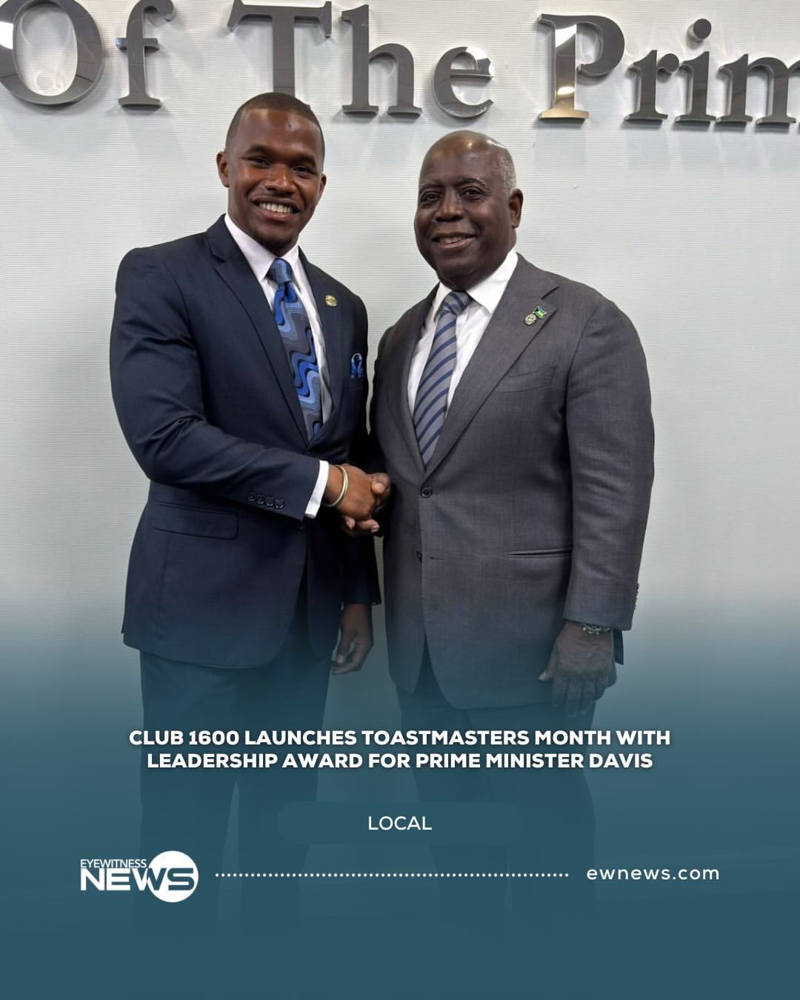
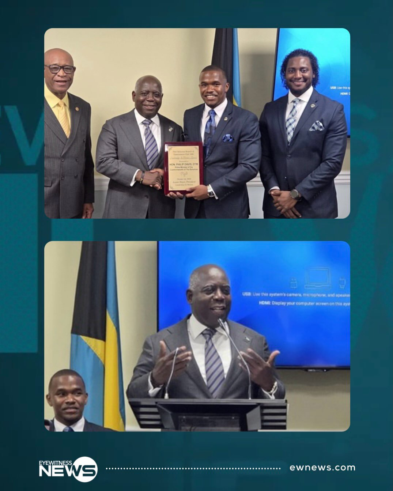
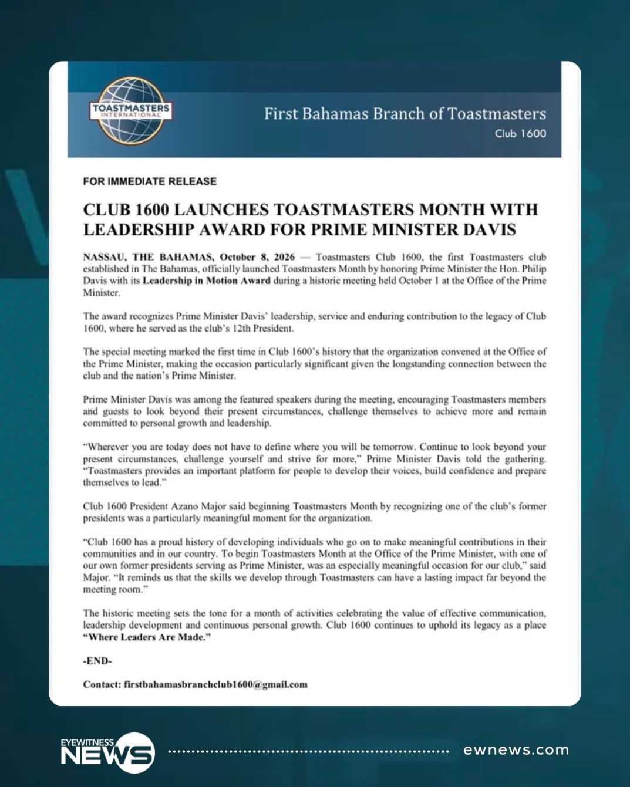

Before the title.
There was the room.
Club 1600 convened at the Office of the Prime Minister for the first time in its history — celebrating the leadership legacy of former club President #12, Philip E. Davis, DTM.
Club events ↗
Club President Azano P. Major with former Club 1600 President #12, Prime Minister Philip E. Davis. Eyewitness News coverage ↗
Our history
made history.
On October 1, 2026, the First Bahamas Branch of Toastmasters Club 1600 marked the start of Toastmasters Month with a special meeting at the Office of the Prime Minister — the first Club 1600 meeting ever held at that location.
The occasion brought together the club's past, present and future. Prime Minister Philip E. Davis, DTM, who served as Club 1600's 12th President, addressed the members and guests, encouraging personal growth and continued leadership.
President Azano P. Major presented the Prime Minister with the Leadership in Motion Award, recognizing his leadership, service and enduring contribution to the club's legacy. Distinguished Toastmaster Clement Foster also presented a portrait in his honor.
From our history
to the headlines.
The meeting was covered by Eyewitness News and documented in the club's October 1 meeting minutes and official press release.


The work starts
long before the title.
Since 1968, the room has helped generations build the communication, confidence and leadership skills they carry into their communities, careers and public life.